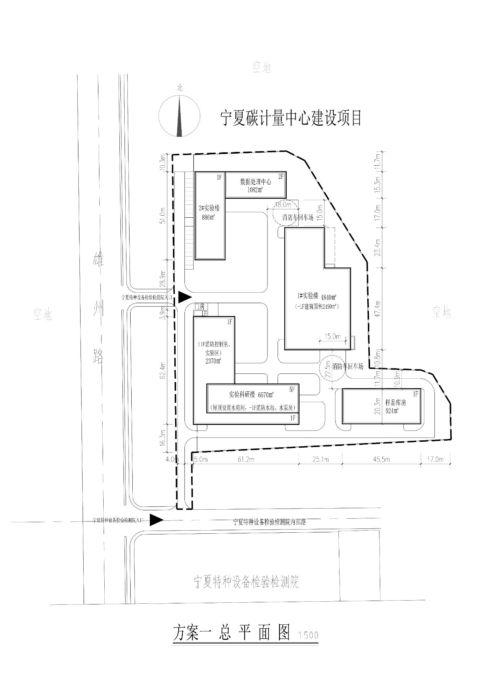

N
∕
C
宁夏碳计量中心
NINGXIA CARBON METROLOGY CENTER
园区空间交互演示
园区实景与汇报版
07 / CAMPUS PRESENTATION
正在载入三维园区…
整体鸟瞰
正交总平面
入口视角
自动巡游
图纸对照 ↗
N
↑
北
方案一 / 总平面
让空间，逐步成形。
拖动旋转 · 滚轮缩放 · 点选建筑
CONSTRUCTION SEQUENCE
完整园区
▶ 搭建演示
1× · 约30秒
0.5× 速度
2× · 约15秒
4× · 约8秒
100%
基坑与基础
柱梁 / 楼板
墙体 / 门窗
屋面 / 景观
完整园区
关闭 ×
原始总平面对照
图纸保留原始标注；模型轮廓为图片推算，尚未完成 CAD 坐标校核。
黑白总平面
景观总平面
